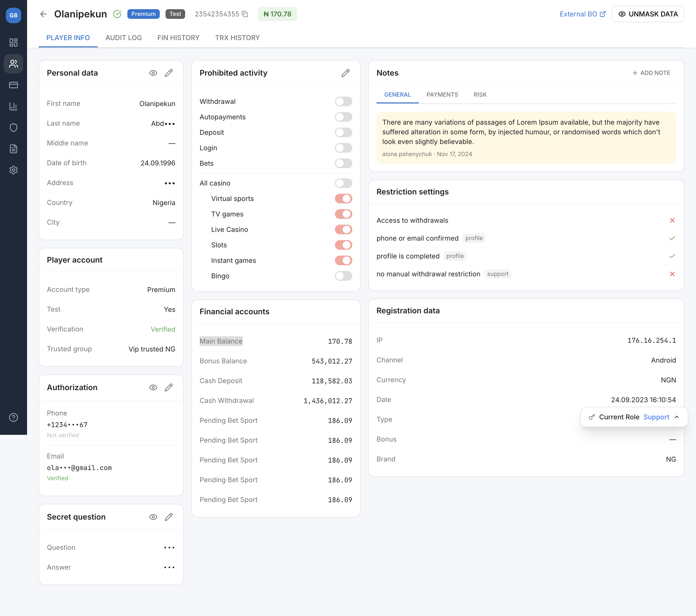

Backoffice Player Info: From Migration to UX Transformation
What started as a routine technical migration of an admin panel turned into a full UX overhaul of the Player Info page — driven by real user pain points, validated through research, and measured by impact on daily operations of 30+ support agents.
Company
iGaming Platform
Role
Senior Product Designer
Timeline
3 months
Platform
Web (Internal Tool)
Impact
−40%
Time to find and resolve a player issue — from 4.2 min average to 2.5 min
−30%
Clicks per typical task — streamlined workflows and quick actions
+25%
Internal CSAT score — support agents rated the new tool significantly higher
−50%
Data entry errors — clearer statuses, validation, and confirmation flows
The Challenge
The company was migrating its legacy backoffice to a modern tech stack. The initial brief was simple: rebuild the Player Info page as-is on the new framework. Same layout, same features, just cleaner code.
But when I audited the existing interface and talked to the people who use it 8 hours a day, I saw something the brief missed: the old design wasn't just outdated — it was actively slowing people down.
The real question: If we're already rebuilding this page from scratch, why reproduce the same friction? A migration is the perfect moment to fix what's broken — without disrupting the product roadmap.
What I proposed to the team
Instead of a 1:1 migration, I pitched a parallel track: migrate the functionality AND improve the experience. The effort delta was minimal (we were rewriting templates anyway), but the impact on daily operations would be significant. PM and engineering leads agreed to a 2-week research sprint before committing to the approach.
Research & Discovery
I conducted 4 in-depth interviews with the primary users of the Player Info page, observed their workflows, and analyzed usage analytics to build a complete picture of pain points.
User interviews
Support Agent
Support Agent, 2 years Uses the Player Info page 60+ times per day to resolve player issues. Main frustration: personal data, financial accounts, and restriction settings are spread across the page with no visual hierarchy — she scrolls back and forth constantly.
"I spend more time scrolling and searching for the right field than actually helping people. Half my shift is just navigating the page."
Team Lead
Team Lead, Support Needs quick overview of player statuses and account restrictions. Struggles with the Prohibited Activity toggles — no bulk disable, no clear indication of which restrictions were set by whom or when. The Notes panel is too small for meaningful context.
"When I get an escalation, I need to understand the full picture in 10 seconds. Right now it takes me 2 minutes of scrolling."
Compliance Officer
Compliance Officer Manages verification, KYC, and access restrictions. Pain point: the Restriction Settings section shows conditions (phone confirmed, profile completed) but doesn't explain what happens when restrictions are triggered. Audit log is a separate tab — no way to see changes inline.
"I check 3 tabs to understand why a player's withdrawals are blocked. It's detective work every single time."
Operations Manager
Operations Manager Reviews player accounts weekly for reporting and fraud detection. Current Role selector (Support, Risk, Fraud, Payments, Product) changes what data is visible, but the context switch is confusing — he often doesn't realize he's viewing data through a filtered role lens.
"I switched to the Fraud role view and forgot I was in it. Spent 20 minutes wondering why data looked different."
Key pain points synthesized
Information overload without hierarchy: Personal data, prohibited activity, financial accounts, restrictions, notes, registration data, authorization — all competing for attention on one page
Masked data friction: Sensitive fields (address, last name, phone, email) are masked by default. Unmasking requires clicking "Unmask Data" but there's no granular control — it's all or nothing
Role-based context is invisible: The Current Role selector (Support/Risk/Fraud/Payments/Product) filters visible data, but there's no visual indicator of what's hidden in the current role view
Separated concerns that belong together: Restriction settings and prohibited activity are in different sections, but they're conceptually linked — support agents constantly cross-reference them
Notes lack structure: Notes panel has General/Payments/Risk tabs but no timestamps, no threading, no way to filter by urgency or topic
Financial accounts section is a wall of numbers: Pending Bet Sport repeated 5 times with same value (186.09) — no grouping, no totals, no visual hierarchy
Analytics audit
4.2 min
Average time to complete a player lookup + action task
Session recordings, N=120
11.3
Average clicks per task (find player → review info → take action → confirm)
Hotjar click tracking
23%
Error rate on prohibited activity toggles due to no confirmation step
Error logs, Q3 2024
3.1 / 5
Internal satisfaction score for the Player Info tool
Quarterly survey, N=34
User Personas
Based on interviews and analytics, I identified three distinct archetypes with different goals, frequencies, and frustrations.
The Resolver
Marina, Support Agent Goal: Find the right data point and resolve the player's issue ASAP Frequency: 60+ player profiles/day Key sections: Personal data, Financial accounts, Authorization Frustration: Scrolling between sections, masked data, no quick actions "I need to get in, find the answer, and move to the next ticket."
The Guardian
Olena, Compliance Officer Goal: Ensure accounts comply with regulations, manage restrictions and verification Frequency: 15–20 deep reviews/day Key sections: Restriction settings, Prohibited activity, Audit log Frustration: Restriction rules are scattered, audit trail is in a separate tab "I need the full picture of restrictions and their history — not a scavenger hunt across tabs."
The Strategist
Viktor, Operations Manager Goal: Quickly understand player account status and make decisions on escalations Frequency: 3–5 times/week Key sections: Player account, Registration data, Notes Frustration: Role-based filtering is invisible, no summary view "Give me the story of this account in 10 seconds. I shouldn't need to scroll through 8 sections."
Role-Based Access Matrix
After a series of workshops with support leads, compliance, risk, and product stakeholders, we mapped out exactly which data and actions each role needs on the Player Info page. This became the foundation for the role-based view system — instead of showing everything to everyone, each role gets a focused interface tailored to their daily tasks.
Support
Risk
Fraud
Payments
Product
Personal data
✓ View & unmask
✓ View only
✓ View & unmask
Limited
✗
Financial accounts
✓ View balances
✓ Full access
✓ Full access
✓ Full access
Aggregated
Prohibited activity
✓ View & toggle
✓ Full control
✓ Full control
✗
✗
Restriction settings
View only
✓ View & edit
✓ View & edit
View only
✗
Notes
✓ General tab
✓ Risk tab
✓ All tabs
✓ Payments tab
Read only
Audit log
✗
✓ Full history
✓ Full history
Payment events
✓ Full history
Registration data
✓
✓
✓
✗
✓
Authorization & sessions
✓ Kill session
✓ Full access
✓ Full access
✗
✗
Key outcome: This matrix eliminated two major pain points at once. Support agents no longer see irrelevant compliance data that clutters their view, while Risk and Fraud teams get direct access to restriction controls without navigating through support-oriented sections. Each role sees exactly what they need — nothing more, nothing less.
Information Architecture & User Flows
I mapped the current page structure and identified how sections relate to each persona's workflow. The goal: reduce cognitive load by grouping related data and surfacing the most-used information.
Key flow: Review player and take action
The Result
Here is the redesigned Player Info page — a single-view layout that consolidates 8 data sections into a clear, scannable structure with role-based access control, inline actions, and structured notes.

Key Design Decisions
Each design decision maps directly to a pain point discovered in research. Here's how the redesigned interface addresses the problems that mattered most.
1. Three-column layout with clear visual hierarchy
Problem
8 sections with equal visual weight
Users couldn't find the right data point without scrolling
No grouping logic — Personal data next to Prohibited activity
Affinity mapping of all pain points — grouped by persona and severity
Information architecture restructuring — 8 sections reorganized into 3 logical columns
Low-fidelity wireframes in Figma (3 rounds of iteration on section layout)
Card sorting exercise with 5 agents to validate grouping logic
Week 5–8: Design & validation
High-fidelity mockups using the platform's design system components
Interactive prototype for usability testing
5 moderated usability tests with target users
Iteration: moved Restriction Settings closer to Prohibited Activity (user feedback)
Week 9–12: Implementation & QA
Detailed specs and handoff in Figma with component annotations
Weekly design reviews with frontend developers
UAT with 3 power users (Marina, Olena, Viktor) before rollout
Staged rollout: 10% → 50% → 100% over 2 weeks
Results & Impact
We measured impact across 4 dimensions, comparing metrics from 4 weeks before and 4 weeks after full rollout.
2.5 min
Average task completion time, down from 4.2 min (−40%)
7.9
Average clicks per task, down from 11.3 (−30%)
3.9 / 5
Internal CSAT score, up from 3.1 (+25%)
11.5%
Error rate on status changes, down from 23% (−50%)
Team lead feedback (Andrei T.): "The new layout means I can scan a player's status in 10 seconds instead of 2 minutes. The restriction indicators alone saved us from dozens of wrong escalations per week."
Learnings & Reflections
1. Migrations are hidden design opportunities
When code is being rewritten anyway, the incremental cost of improving UX is minimal — but the impact is outsized. I now advocate for a UX audit at the start of every migration project, not just the ones flagged as "redesigns."
2. Internal tools deserve the same rigor as customer-facing products
Support agents use this page 8 hours a day, 60+ times per shift. A 40% time reduction means they can handle more tickets, with less frustration. Internal tools compound: every efficiency gain multiplies across the entire team, every day.
3. Talk to the people who stare at the screen all day
4 interviews took less than a week but completely changed the project direction. Marina's insight about scrolling fatigue led to the three-column layout. Olena's frustration with restriction rules led to the pass/fail indicators. The best design decisions came directly from user language.
4. What I'd do differently
I would have pushed for analytics instrumentation earlier. We only had baseline metrics from session recordings and error logs. If we'd had proper event tracking from day one, we could have measured impact more precisely and built a stronger case for extending this approach to the Audit Log and Financial History tabs.
Figma Design & prototyping
Miro Affinity mapping & card sorting
Hotjar Session recordings & heatmaps
Jira Task tracking & sprints
Want to discuss this project?
I'd love to walk you through the research process and design decisions in detail.